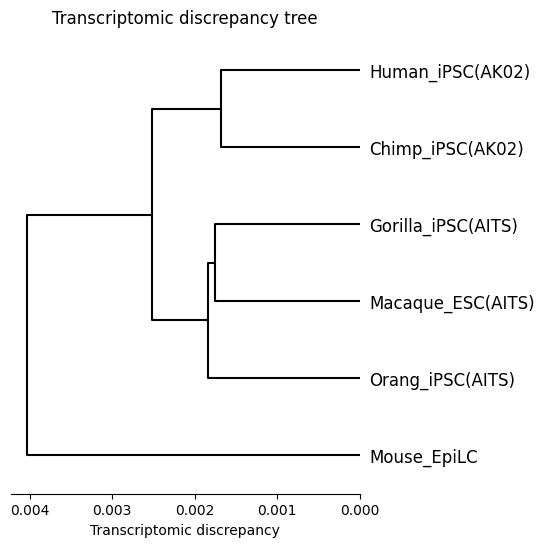

[1]:
# import jupyter_black
# jupyter_black.load()
Dataset 2
Please extract dataset2.zip into the directory “data”
[2]:
# data_option = "dataset1"
data_option = "dataset2"
Initial setup
[3]:
from speciesot import configure_platform, Config, Data, SpeciesOT
[4]:
configure_platform()
# configure_platform("gpu")
# configure_platform("cpu")
JAX is configured to use: METAL
Computational parameters
[5]:
if data_option == "dataset1":
mask_option = "time_series_data"
threshold = 3.0
threshold_surer = 3.5
high_epsilon = 0.01
elif data_option == "dataset2":
mask_option = "one_time_point_data"
threshold = 1.4
threshold_surer = 2.5
high_epsilon = 0.1
elif data_option == "custom":
mask_option = "one_time_point_data"
threshold = 1.4
threshold_surer = 2.5
high_epsilon = 0.01
[6]:
iterations = 1000
threshold_eps = 1e-4
low_epsilon = 0.0
threshold_tol = 3.0
[7]:
if data_option == "dataset1":
species = ["human", "macaque", "mouse"]
species_pairs = []
species_labels = ["Human", "Macaque", "Mouse"]
elif data_option == "dataset2":
species = ["human", "chimpanzee", "gorilla", "orangutan", "macaque", "mouse"]
species_pairs = []
species_labels = [
"Human_iPSC(AK02)",
"Chimp_iPSC(AK02)",
"Gorilla_iPSC(AITS)",
"Orang_iPSC(AITS)",
"Macaque_ESC(AITS)",
"Mouse_EpiLC",
]
elif data_option == "custom":
species = ["animal1", "animal2", "animal3"]
species_pairs = []
species_labels = ["Animal1", "Animal2", "Animal3"]
Initialize the Config() class
[8]:
if data_option == "dataset1":
config = Config(
"dataset1",
"drop",
"distinct",
"auto",
"euclidean",
"original",
"fixed",
mask_option,
iterations,
threshold_eps,
low_epsilon,
high_epsilon,
threshold_tol,
threshold,
threshold_surer,
species=species,
species_pairs=species_pairs,
species_labels=species_labels,
)
elif data_option == "dataset2":
config = Config(
"dataset2",
"drop",
"distinct",
"auto",
"euclidean",
"original",
"fixed",
mask_option,
iterations,
threshold_eps,
low_epsilon,
high_epsilon,
threshold_tol,
threshold,
threshold_surer,
species=species,
species_pairs=species_pairs,
species_labels=species_labels,
)
elif data_option == "custom":
config = Config(
data_option="custom",
mouse_option="drop",
gene_option="distinct",
threshold_option="auto",
metric_option="euclidean",
dismat_option="original",
gwot_option="fixed",
mask_option=mask_option,
iterations=iterations,
threshold_eps=threshold_eps,
low_epsilon=low_epsilon,
high_epsilon=high_epsilon,
threshold_tol=threshold_tol,
threshold=threshold,
threshold_surer=threshold_surer,
species=species,
species_pairs=species_pairs,
species_labels=species_labels,
)
Initialize the Data() class
[9]:
data = Data(config)
Read CSV file
[10]:
data = data.read_csv()
Geometrization steps (noise reduction and total count normalization)
[11]:
data = data.normalization()
start RECODE for scRNA-seq data
end RECODE for scRNA-seq
log: {'seq_target': 'RNA', '#significant genes': np.int64(16535), '#non-significant genes': np.int64(15612), '#silent genes': np.int64(0), 'ell': np.int64(65), 'Elapsed time': '0h 0m 8s 877ms', 'solver': 'full'}
start RECODE for scRNA-seq data
end RECODE for scRNA-seq
log: {'seq_target': 'RNA', '#significant genes': np.int64(15569), '#non-significant genes': np.int64(12952), '#silent genes': np.int64(0), 'ell': np.int64(32), 'Elapsed time': '0h 0m 1s 727ms', 'solver': 'full'}
start RECODE for scRNA-seq data
end RECODE for scRNA-seq
log: {'seq_target': 'RNA', '#significant genes': np.int64(15118), '#non-significant genes': np.int64(14736), '#silent genes': np.int64(0), 'ell': np.int64(66), 'Elapsed time': '0h 0m 11s 453ms', 'solver': 'full'}
start RECODE for scRNA-seq data
end RECODE for scRNA-seq
log: {'seq_target': 'RNA', '#significant genes': np.int64(14588), '#non-significant genes': np.int64(14096), '#silent genes': np.int64(0), 'ell': np.int64(84), 'Elapsed time': '0h 0m 9s 884ms', 'solver': 'full'}
start RECODE for scRNA-seq data
end RECODE for scRNA-seq
log: {'seq_target': 'RNA', '#significant genes': np.int64(14746), '#non-significant genes': np.int64(11152), '#silent genes': np.int64(0), 'ell': np.int64(119), 'Elapsed time': '0h 0m 9s 924ms', 'solver': 'full'}
start RECODE for scRNA-seq data
end RECODE for scRNA-seq
log: {'seq_target': 'RNA', '#significant genes': np.int64(12010), '#non-significant genes': np.int64(9099), '#silent genes': np.int64(0), 'ell': np.int64(43), 'Elapsed time': '0h 0m 2s 399ms', 'solver': 'full'}
Geometrization step (gene selection using human transcription factors)
[12]:
data = data.read_tf()
#genes in hTF.txt
1639
Initialize the SpeciesOT() class
[13]:
spe_ot = SpeciesOT(data)
Geometrization step (filtering)
[14]:
spe_ot = spe_ot.preprocessing()
Geometrization step (distance matrix computation)
[15]:
spe_ot = spe_ot.calculate_gene_distance_matrix()
Entropically regularized Gromov-Wasserstein optimal transport
[16]:
spe_ot = spe_ot.gromov_wasserstein_ot()
Platform 'METAL' is experimental and not all JAX functionality may be correctly supported!
WARNING: All log messages before absl::InitializeLog() is called are written to STDERR
W0000 00:00:1761130318.050345 5349321 mps_client.cc:510] WARNING: JAX Apple GPU support is experimental and not all JAX functionality is correctly supported!
I0000 00:00:1761130318.062600 5349321 service.cc:145] XLA service 0x120f3e7f0 initialized for platform METAL (this does not guarantee that XLA will be used). Devices:
I0000 00:00:1761130318.062614 5349321 service.cc:153] StreamExecutor device (0): Metal, <undefined>
I0000 00:00:1761130318.064067 5349321 mps_client.cc:406] Using Simple allocator.
I0000 00:00:1761130318.064080 5349321 mps_client.cc:384] XLA backend will use up to 103078739968 bytes on device 0 for SimpleAllocator.
Metal device set to: Apple M3 Max
systemMemory: 128.00 GB
maxCacheSize: 48.00 GB
epsilon = 0.1000000 converged
Normalized optimal transport plan
[17]:
spe_ot = spe_ot.normalize_otp()
Transcriptomic discrepancy
[18]:
spe_ot.plot_transcriptomic_discrepancy()


Chained Processing
[19]:
data2 = Data(config).read_csv().normalization().read_tf()
start RECODE for scRNA-seq data
end RECODE for scRNA-seq
log: {'seq_target': 'RNA', '#significant genes': np.int64(16535), '#non-significant genes': np.int64(15612), '#silent genes': np.int64(0), 'ell': np.int64(65), 'Elapsed time': '0h 0m 8s 538ms', 'solver': 'full'}
start RECODE for scRNA-seq data
end RECODE for scRNA-seq
log: {'seq_target': 'RNA', '#significant genes': np.int64(15569), '#non-significant genes': np.int64(12952), '#silent genes': np.int64(0), 'ell': np.int64(32), 'Elapsed time': '0h 0m 1s 708ms', 'solver': 'full'}
start RECODE for scRNA-seq data
end RECODE for scRNA-seq
log: {'seq_target': 'RNA', '#significant genes': np.int64(15118), '#non-significant genes': np.int64(14736), '#silent genes': np.int64(0), 'ell': np.int64(66), 'Elapsed time': '0h 0m 11s 601ms', 'solver': 'full'}
start RECODE for scRNA-seq data
end RECODE for scRNA-seq
log: {'seq_target': 'RNA', '#significant genes': np.int64(14588), '#non-significant genes': np.int64(14096), '#silent genes': np.int64(0), 'ell': np.int64(84), 'Elapsed time': '0h 0m 9s 391ms', 'solver': 'full'}
start RECODE for scRNA-seq data
end RECODE for scRNA-seq
log: {'seq_target': 'RNA', '#significant genes': np.int64(14746), '#non-significant genes': np.int64(11152), '#silent genes': np.int64(0), 'ell': np.int64(119), 'Elapsed time': '0h 0m 10s 021ms', 'solver': 'full'}
start RECODE for scRNA-seq data
end RECODE for scRNA-seq
log: {'seq_target': 'RNA', '#significant genes': np.int64(12010), '#non-significant genes': np.int64(9099), '#silent genes': np.int64(0), 'ell': np.int64(43), 'Elapsed time': '0h 0m 2s 151ms', 'solver': 'full'}
#genes in hTF.txt
1639
[20]:
spe_ot2 = (
SpeciesOT(data2)
.preprocessing()
.calculate_gene_distance_matrix()
.gromov_wasserstein_ot()
.normalize_otp()
.plot_transcriptomic_discrepancy()
)
epsilon = 0.1000000 converged